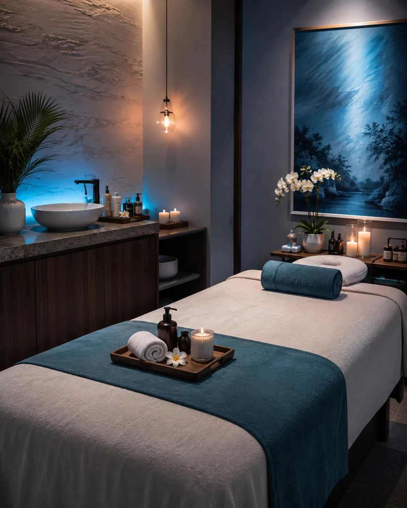
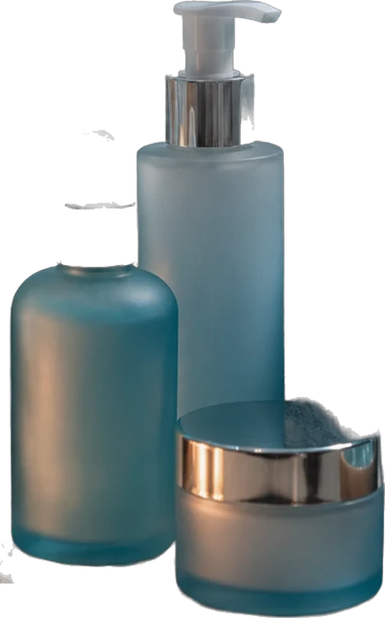
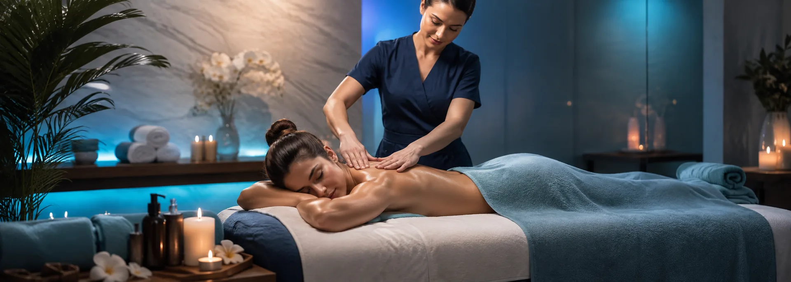
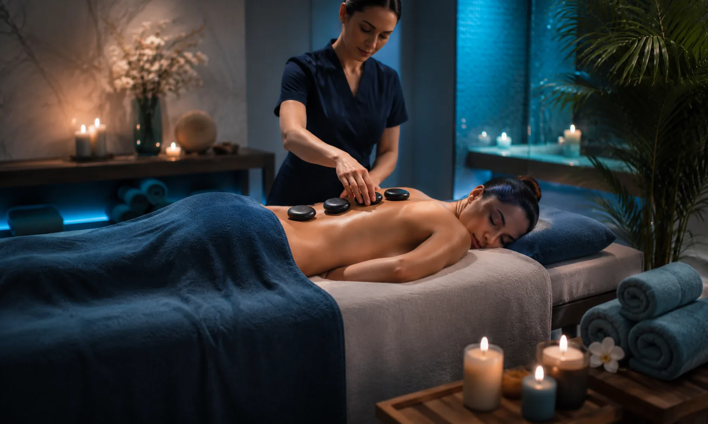
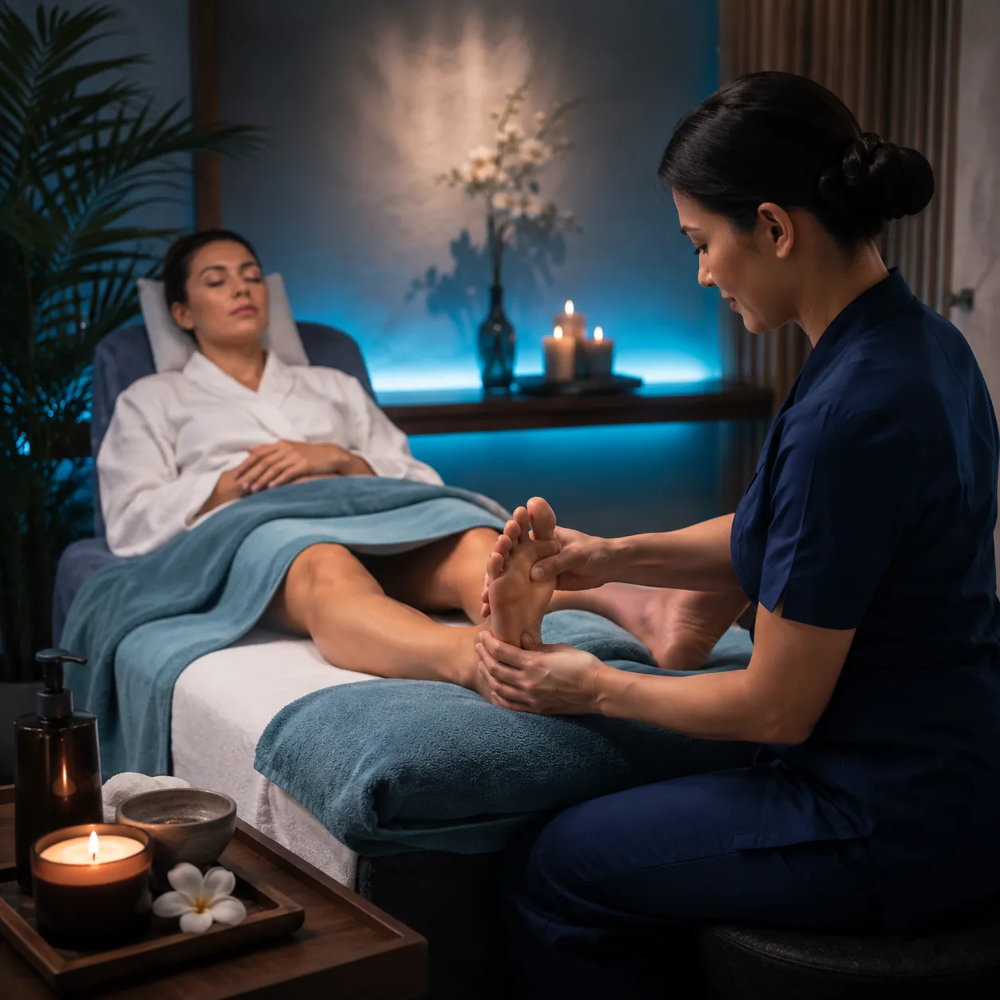

Masajes y limpiezas faciales
Bajá un cambio en una hora.
Descontracturantes, relajantes, piedras calientes, reflexología y limpiezas faciales. Las toallas, los aceites y el silencio los ponemos nosotros.
Turnos por WhatsApp, respuesta el mismo día

y luz baja

01 — Tratamientos
Elegí qué necesita el cuerpo hoy
Cinco tratamientos, uno por vez. Si no sabés cuál te sirve, escribinos qué te duele y lo definimos juntos.
-
01
50 min Reservar
Masaje descontracturante
Trabajo profundo sobre cervicales, dorsales y lumbares. Para la espalda que aguanta ocho horas de escritorio y avisa a la noche.
-
02
60 min Reservar
Masaje relajante
Maniobras largas y parejas de cuerpo entero, sin presión fuerte. El que se elige cuando la cabeza no para y el sueño viene cortado.
-
03
70 min Reservar
Piedras calientes
Basalto a temperatura apoyado sobre los puntos de tensión. El calor abre camino y las manos entran donde solas tardarían el doble.
-
04
40 min Reservar
Reflexología podal
Presión sostenida sobre los puntos del pie, zona por zona. Para quien pasa el día parada o llega con las piernas pesadas.
-
05
60 min Reservar
Limpieza facial profunda
Higiene, extracción y máscara elegida según tu piel, con lupa y sin apuro. Salís con la cara liviana y sin brillo.
02 — Probá ahora
Una respiración, antes de seguir
Scrolleá despacio. El círculo marca el ritmo que usamos al empezar cada sesión: inhalás cuatro, sostenés cuatro, exhalás seis. Nada más que eso.
- 4"
Inhalá por la nariz
El aire entra hasta la panza, sin levantar los hombros. El círculo se abre con vos.
- 4"
Sostené
No aprietes. Solo esperá con el aire adentro mientras el círculo se queda quieto.
- 6"
Exhalá por la boca
Largo y lento, más que la inhalación. Ahí es donde el cuerpo afloja de verdad.
Si te salió, imaginate una hora entera así.

03 — La sala
Un ambiente pensado para que te olvides del afuera
Luz baja, temperatura estable y una sola persona por turno. No compartís sala, no escuchás la recepción y nadie te apura para liberar la camilla.
- Toallas, sábanas y bata limpias por persona
- Aceites neutros e hipoalergénicos, sin perfume fuerte
- Diez minutos de charla antes para saber qué te duele
- Música baja o silencio, como prefieras


04 — Voces
Lo que cuentan al salir
«Llegué con la cervical dura de tres semanas frente a la compu. A la segunda sesión pude girar la cabeza sin acordarme de que me dolía.»
«Me hice la limpieza facial antes del casamiento de mi hermana. Tres días después seguía teniendo la piel igual de linda en las fotos.»
«Escribí un martes a las once de la noche pensando que me contestaban al otro día. Tenía el turno confirmado en diez minutos.»
05 — Preguntas
Lo que nos preguntan antes de venir
¿Tengo que llevar algo?
No. Toallas, sábanas, bata y aceites los ponemos nosotros. Vení con ropa cómoda y, si querés, un rato antes para no llegar corriendo.
¿Cuánto dura en total?
La sesión dura entre 40 y 70 minutos según el tratamiento. Sumale unos diez minutos para la charla del principio y para vestirte tranquila al final.
¿Cómo saco turno?
Por WhatsApp. Contanos qué tratamiento te interesa y qué días te quedan cómodos, y lo cerramos en la misma conversación.
¿Cuántas sesiones voy a necesitar?
Depende de qué traigas. Una contractura puntual suele aflojar en dos o tres sesiones seguidas; después, la mayoría vuelve una vez por mes para mantenimiento.
Estoy embarazada, ¿puedo hacerme un masaje?
Sí, a partir del segundo trimestre, con la posición y las maniobras adaptadas. Avisanos al reservar así preparamos la camilla, y si tenés indicación médica particular, contanos cuál.
06 — Turnos
Escribinos y elegimos el horario juntos
Sin formularios ni esperas: mandás un mensaje, te decimos qué hay disponible esta semana y queda reservado.
11 3688-9520- Horarios
- Lunes a viernes de 9 a 20 h
Sábados de 9 a 14 h - Dónde
- Buenos Aires
Dirección exacta al confirmar el turno